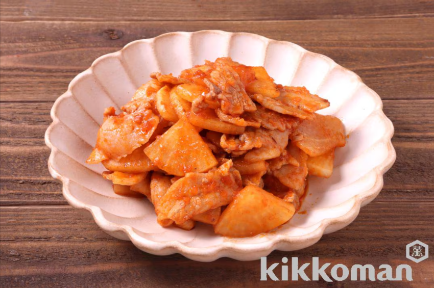

豚バラ大根のトマト炒め(パットマ！トマトおかずソース使用)

材料（2人分）
豚バラ肉（薄切り）... ２００ｇ
大根 ... ２枚
ごま油... 小さじ２
デルモンテ パットマ！トマトおかずソース
... 大さじ5
作り方（調理時間:10分/目安）
豚肉は５ｃｍ長さに切る。大根は５ｍｍ厚さのいちょう切りにする。
フライパンにごま油を中火で熱し、豚肉と大根を炒める。
肉の色が変わり大根に火が通ったら、パットマ！トマトおかずソースを加えて、大きく混ぜながら炒め合わせる。
引用元
キッコーマンレシピサイト「ホームクッキング」